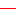

<!doctype html>
<html lang="en">
    <head>
        <meta charset="utf-8">
        <meta http-equiv="X-UA-Compatible" content="IE=edge">
        <meta name="viewport" content="initial-scale=1,user-scalable=no,maximum-scale=1,width=device-width">
        <meta name="mobile-web-app-capable" content="yes">
        <meta name="apple-mobile-web-app-capable" content="yes">
        <link rel="stylesheet" href="css/leaflet.css"><link rel="stylesheet" href="css/L.Control.Locate.min.css">
        <link rel="stylesheet" href="css/qgis2web.css"><link rel="stylesheet" href="css/fontawesome-all.min.css">
        <link rel="stylesheet" href="css/leaflet-measure.css">
        <style>
        html, body, #map {
            width: 100%;
            height: 100%;
            padding: 0;
            margin: 0;
        }
        </style>
        <title></title>
    </head>
    <body>
        <div id="map">
        </div>
        <script src="js/qgis2web_expressions.js"></script>
        <script src="js/leaflet.js"></script><script src="js/L.Control.Locate.min.js"></script>
        <script src="js/leaflet.rotatedMarker.js"></script>
        <script src="js/leaflet.pattern.js"></script>
        <script src="js/leaflet-hash.js"></script>
        <script src="js/Autolinker.min.js"></script>
        <script src="js/rbush.min.js"></script>
        <script src="js/labelgun.min.js"></script>
        <script src="js/labels.js"></script>
        <script src="js/leaflet.wms.js"></script>
        <script src="js/leaflet-measure.js"></script>
        <script src="data/batimetria_iso_2.js"></script>
        <script src="data/punti_cinofili_3.js"></script>
        <script>
        var map = L.map('map', {
            zoomControl:true, maxZoom:28, minZoom:1
        }).fitBounds([[46.37320672370079,11.044794077233348],[46.374068202453564,11.046774207656938]]);
        var hash = new L.Hash(map);
        map.attributionControl.setPrefix('<a href="https://github.com/tomchadwin/qgis2web" target="_blank">qgis2web</a> &middot; <a href="https://leafletjs.com" title="A JS library for interactive maps">Leaflet</a> &middot; <a href="https://qgis.org">QGIS</a>');
        var autolinker = new Autolinker({truncate: {length: 30, location: 'smart'}});
        L.control.locate({locateOptions: {maxZoom: 19}}).addTo(map);
        var measureControl = new L.Control.Measure({
            position: 'topleft',
            primaryLengthUnit: 'meters',
            secondaryLengthUnit: 'kilometers',
            primaryAreaUnit: 'sqmeters',
            secondaryAreaUnit: 'hectares'
        });
        measureControl.addTo(map);
        document.getElementsByClassName('leaflet-control-measure-toggle')[0]
        .innerHTML = '';
        document.getElementsByClassName('leaflet-control-measure-toggle')[0]
        .className += ' fas fa-ruler';
        var bounds_group = new L.featureGroup([]);
        function setBounds() {
        }
        map.createPane('pane_ecwrgb2015_0');
        map.getPane('pane_ecwrgb2015_0').style.zIndex = 400;
        var layer_ecwrgb2015_0 = L.WMS.layer("https://siat.provincia.tn.it/geoserver/stem/ecw-rgb-2015/wms?version=1.3.0", "ecw-rgb-2015", {
            pane: 'pane_ecwrgb2015_0',
            format: 'image/png',
            uppercase: true,
            transparent: true,
            continuousWorld : true,
            tiled: true,
            info_format: 'text/html',
            opacity: 1,
            identify: false,
            attribution: '',
        });
        map.addLayer(layer_ecwrgb2015_0);
        map.createPane('pane_bathimetry_deeper_04_1');
        map.getPane('pane_bathimetry_deeper_04_1').style.zIndex = 401;
        var img_bathimetry_deeper_04_1 = 'data/bathimetry_deeper_04_1.png';
        var img_bounds_bathimetry_deeper_04_1 = [[46.368834694544056,11.042448717480255],[46.37845073941602,11.052647396209586]];
        var layer_bathimetry_deeper_04_1 = new L.imageOverlay(img_bathimetry_deeper_04_1,
                                              img_bounds_bathimetry_deeper_04_1,
                                              {pane: 'pane_bathimetry_deeper_04_1'});
        bounds_group.addLayer(layer_bathimetry_deeper_04_1);
        map.addLayer(layer_bathimetry_deeper_04_1);
        function pop_batimetria_iso_2(feature, layer) {
            var popupContent = '<table>\
                    <tr>\
                        <td colspan="2">' + (feature.properties['id'] !== null ? autolinker.link(feature.properties['id'].toLocaleString()) : '') + '</td>\
                    </tr>\
                    <tr>\
                        <td colspan="2">' + (feature.properties['deep'] !== null ? autolinker.link(feature.properties['deep'].toLocaleString()) : '') + '</td>\
                    </tr>\
                    <tr>\
                        <th scope="row">metri</th>\
                        <td>' + (feature.properties['metri'] !== null ? autolinker.link(feature.properties['metri'].toLocaleString()) : '') + '</td>\
                    </tr>\
                </table>';
            layer.bindPopup(popupContent, {maxHeight: 400});
        }

        function style_batimetria_iso_2_0() {
            return {
                pane: 'pane_batimetria_iso_2',
                opacity: 1,
                color: 'rgba(255,0,4,1.0)',
                dashArray: '',
                lineCap: 'square',
                lineJoin: 'bevel',
                weight: 1.0,
                fillOpacity: 0,
                interactive: true,
            }
        }
        map.createPane('pane_batimetria_iso_2');
        map.getPane('pane_batimetria_iso_2').style.zIndex = 402;
        map.getPane('pane_batimetria_iso_2').style['mix-blend-mode'] = 'normal';
        var layer_batimetria_iso_2 = new L.geoJson(json_batimetria_iso_2, {
            attribution: '',
            interactive: true,
            dataVar: 'json_batimetria_iso_2',
            layerName: 'layer_batimetria_iso_2',
            pane: 'pane_batimetria_iso_2',
            onEachFeature: pop_batimetria_iso_2,
            style: style_batimetria_iso_2_0,
        });
        bounds_group.addLayer(layer_batimetria_iso_2);
        map.addLayer(layer_batimetria_iso_2);
        function pop_punti_cinofili_3(feature, layer) {
            var popupContent = '<table>\
                    <tr>\
                        <td colspan="2">' + (feature.properties['name'] !== null ? autolinker.link(feature.properties['name'].toLocaleString()) : '') + '</td>\
                    </tr>\
                    <tr>\
                        <td colspan="2">' + (feature.properties['y'] !== null ? autolinker.link(feature.properties['y'].toLocaleString()) : '') + '</td>\
                    </tr>\
                    <tr>\
                        <td colspan="2">' + (feature.properties['x'] !== null ? autolinker.link(feature.properties['x'].toLocaleString()) : '') + '</td>\
                    </tr>\
                </table>';
            layer.bindPopup(popupContent, {maxHeight: 400});
        }

        function style_punti_cinofili_3_0() {
            return {
                pane: 'pane_punti_cinofili_3',
                radius: 4.0,
                opacity: 1,
                color: 'rgba(35,35,35,1.0)',
                dashArray: '',
                lineCap: 'butt',
                lineJoin: 'miter',
                weight: 1,
                fill: true,
                fillOpacity: 1,
                fillColor: 'rgba(152,125,183,1.0)',
                interactive: true,
            }
        }
        map.createPane('pane_punti_cinofili_3');
        map.getPane('pane_punti_cinofili_3').style.zIndex = 403;
        map.getPane('pane_punti_cinofili_3').style['mix-blend-mode'] = 'normal';
        var layer_punti_cinofili_3 = new L.geoJson(json_punti_cinofili_3, {
            attribution: '',
            interactive: true,
            dataVar: 'json_punti_cinofili_3',
            layerName: 'layer_punti_cinofili_3',
            pane: 'pane_punti_cinofili_3',
            onEachFeature: pop_punti_cinofili_3,
            pointToLayer: function (feature, latlng) {
                var context = {
                    feature: feature,
                    variables: {}
                };
                return L.circleMarker(latlng, style_punti_cinofili_3_0(feature));
            },
        });
        bounds_group.addLayer(layer_punti_cinofili_3);
        map.addLayer(layer_punti_cinofili_3);
        var baseMaps = {};
        L.control.layers(baseMaps,{' punti_cinofili': layer_punti_cinofili_3,' batimetria_iso': layer_batimetria_iso_2,"bathimetry_deeper_04": layer_bathimetry_deeper_04_1,"ecw-rgb-2015": layer_ecwrgb2015_0,}).addTo(map);
        setBounds();
        var i = 0;
        layer_batimetria_iso_2.eachLayer(function(layer) {
            var context = {
                feature: layer.feature,
                variables: {}
            };
            layer.bindTooltip((layer.feature.properties['metri'] !== null?String('<div style="color: #000000; font-size: 10pt; font-family: \'Noto Sans\', sans-serif;">' + layer.feature.properties['metri']) + '</div>':''), {permanent: true, offset: [-0, -16], className: 'css_batimetria_iso_2'});
            labels.push(layer);
            totalMarkers += 1;
              layer.added = true;
              addLabel(layer, i);
              i++;
        });
        L.ImageOverlay.include({
            getBounds: function () {
                return this._bounds;
            }
        });
        resetLabels([layer_batimetria_iso_2]);
        map.on("zoomend", function(){
            resetLabels([layer_batimetria_iso_2]);
        });
        map.on("layeradd", function(){
            resetLabels([layer_batimetria_iso_2]);
        });
        map.on("layerremove", function(){
            resetLabels([layer_batimetria_iso_2]);
        });
        </script>
    </body>
</html>
